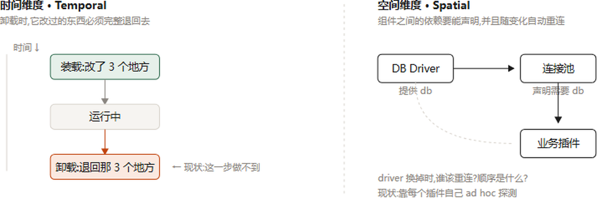
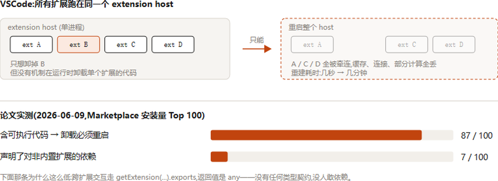
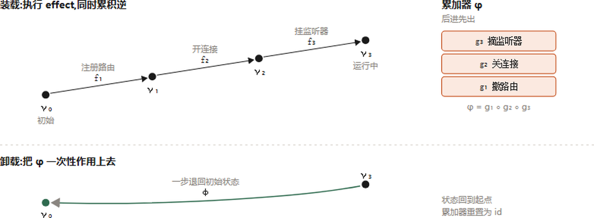
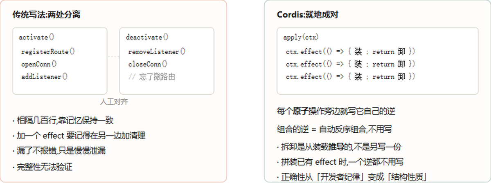
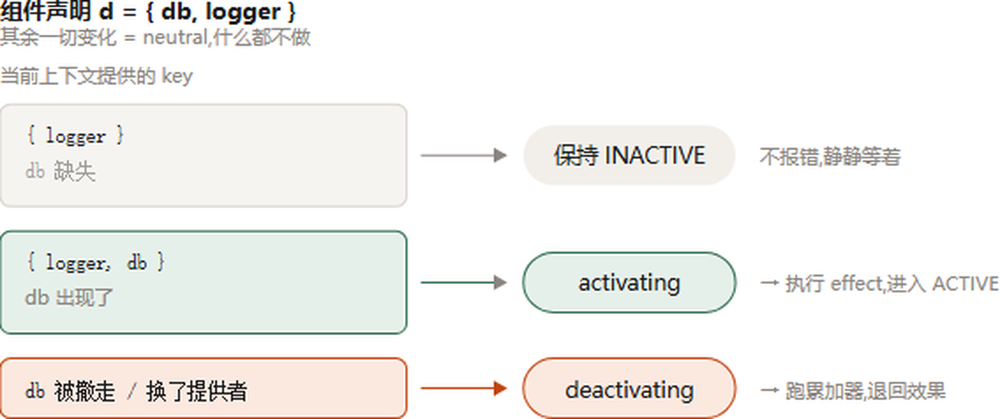
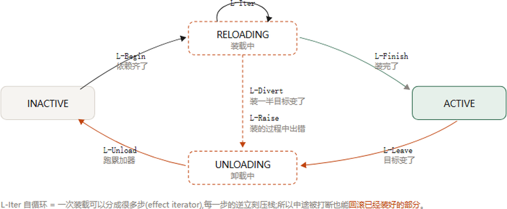
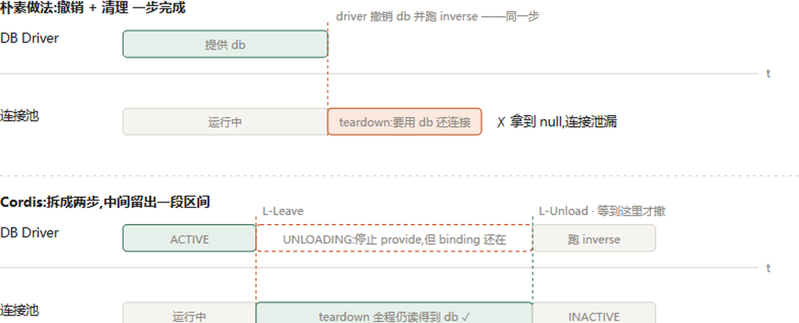
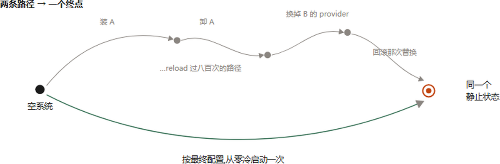
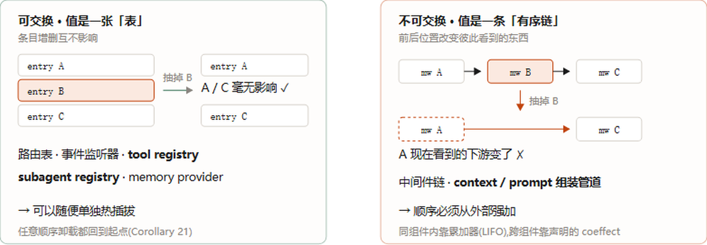
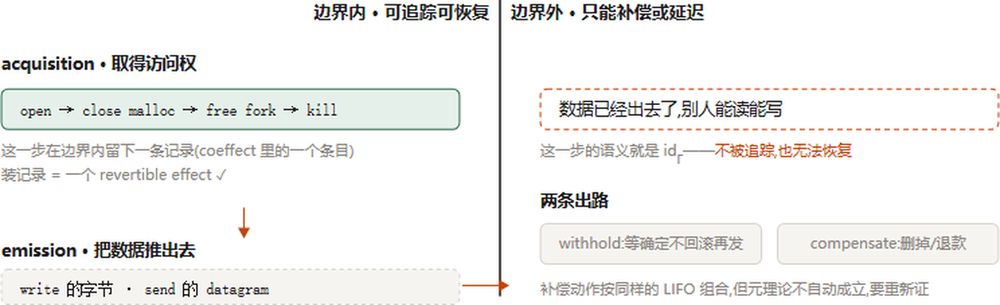

一句话：让一个组件在系统跑着的时候被装上、卸掉、换掉，而且不留残留、不出错、不用重启。下面十张图，每张只讲一件事。
这份图解指南把北大×DeepSeek-AI的Cordis论文（时空可组合性编程范式）浓缩成一张接一张的关键概念图，直指每个结论真正的难点与依据。
论文说动态组合有两个互不相干的维度，分开看，各自要什么就清楚了。

时间维度：组件被移除后，它改过的所有共享状态要能完全还原：就像上台阶时，每踩一步就把「怎么退回这一步」压进一个累加器；下台阶就是反着放一遍（track / recover）。空间维度：组件要能声明并解析它依赖别人什么，且这种依赖关系是可验证、反应式的。
今天大家的做法是「出问题就重启进程」。论文用VSCode实测了这个代价：重启会丢掉全部进程内累积状态（缓存、连接、部分计算），重建要几秒到几分钟，期间得靠冗余副本维持可用。

这是一个粗粒度的凑合方案：操作系统在进程粒度给时间可组合性，容器编排在服务粒度给空间可组合性。粒度一错配，要么把不需要重启的都重启了，要么在共享地址空间的组件之间根本没法定依赖。
上台阶时，每踩一步就把「怎么退回这一步」压进一个累加器；下台阶就是反着放一遍。这就是可逆效应（revertible effects）：每一个上下文变换都携带一个显式的逆，由运行时跟踪并回收（track / recover）。

只要逆是完整推导出来的，运行时就能在组件被移除时，按逆序把所有副作用干净地拆掉：不留残留。
不是「有cleanup钩子」这么简单：那是手写的。差别在于cleanup是手写的还是推导出来的。

VSCode也有deactivate钩子，但它只是宿主进程终止时的停机回调，既不能做热移除，也把效应销毁（dispose）与创建（activate）分开，违背关注点局部性，很难验证完整清理。手写cleanup靠人记得写全；推导的逆由运行时保证，不会漏。
组件只说「我需要什么」，不去主动找。上下文一变，runtime拿它的声明比一遍，只分三种结果：激活、停用、或中性。这就是响应式余效应（reactive coeffects）。

组件声明依赖（coeffect spec），运行时在依赖出现、消失或改变身份时，按声明把这个组件通知为激活/停用/中性。依赖拓扑的管理由运行时负责，组件自己不必监听、轮询或用临时手段探测。
可逆效应管时间、响应式余效应管空间，两者统一进同一个context类型，再组合成「组件」。组件在上下文上实例化为fiber，形成一条生命周期（论文Figure 2）。

生命周期有四个状态，其中两个是「过渡中」：正是这两个过渡态（如LOADING → ACTIVE、以及涉及卸载的过渡）承载了全部难点：它保证系统在任何时刻都不处于「半卸载」「半加载」的中间态。
这是全篇最实用的一张图，它解释了一个你一定踩过的bug：卸载不是一瞬间，而是一个需要显式建模的过程态。

如果没有UNLOADING这样一个显式的过渡态，两个并发操作：一个在读组件的数据、一个在卸它：就会互相踩踏。有了这个中间态，运行时能在卸载完成前把访问拦下来，保证不会拿到已经半失效的引用。
这条定理（可合流性）是「敢不重启」的全部依据。它保证：无论组件以什么顺序交错地装卸、无论过渡如何并行发生，最终到达的系统状态是一致的：不会因为调度顺序不同而分叉出不安全的结果。

正因为Confluence成立，运行时才能放心让组件在运行时任意组合，而不必担心最终状态依赖执行顺序。这就是敢不重启的底气。
LIFO顺序卸载是白送的：只要按后进先出拆，逆必然是合法的。但想在一堆组件混在一起时单独抽掉中间那个，就需要independence（独立键）。

independence把你的key分成两类：commutative key（可交换键）与普通key。只有声明的依赖在交换时不影响结果，运行时才能安全地把某个中间组件单独摘走，而不破坏它前后组件的相对次序。这是设计组件接口时躲不掉的一个概念。
这是论文给自己划的边界，也是你实际用它时最该记住的一句：有逆的、可交换的效果撤得了；没有逆的或依赖次序敏感的，撤不了。

时间可组合性保证的是「组件做过的事能被还原」，但不是「任何组件都能在任意时刻被摘除」。循环依赖、不可逆副作用、对次序敏感的依赖，都在撤不了的范围内。理解这条边界，才不会把承诺用过头。
这份指南最后给了一张速查表：想抄一个能用的实现，读第5节Algorithm 1–10，ctx.effect本体就8行；想知道它保证不了什么，读6.1边界与6.5循环依赖；想设计接口不踩坑，读3.3.2 commutative key；想说服自己敢不重启，读4.4.5 Confluence的结论段；剩下的40页公式，给审稿人的可跳。
一句话：公式不是做harness的成本，是「不重启」这个承诺的定价。你要是接受「出问题就重启进程」，整篇论文都不用看：那正是它 §1.2.3里说的那个「粗粒度的凑合方案」，大家现在都在用，代价是每次重启丢掉全部process-local状态、重建要几秒到几分钟。
参考：https://cordis-paper-visual-guide-r5cwfhkv.lobe.page/